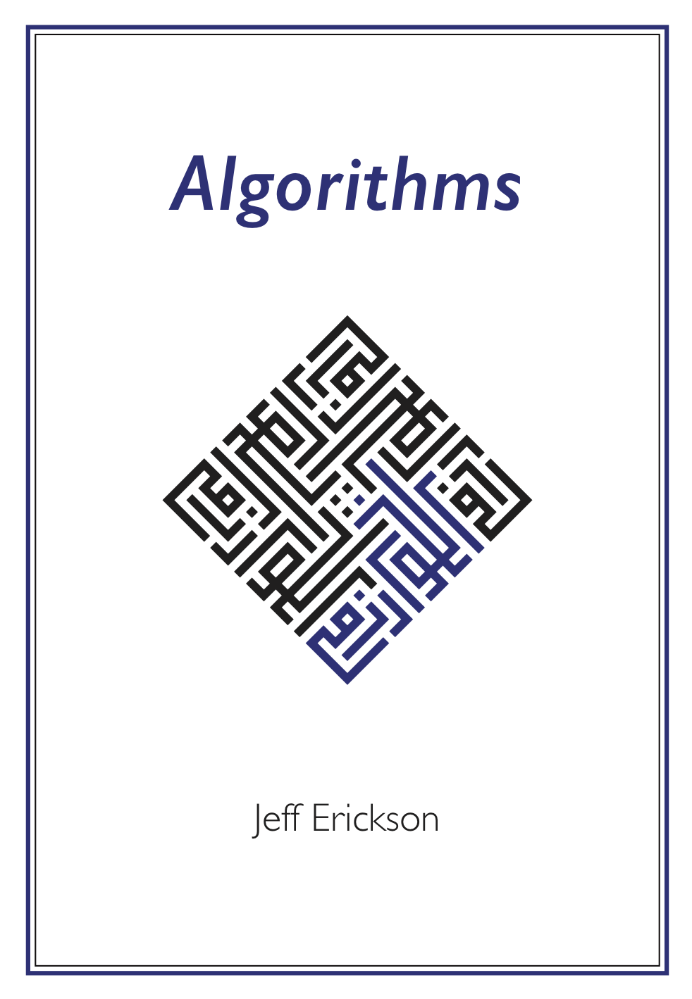

CS 374
As a senior Computer Science student creating this resource, I felt a deep sense of responsibility not just towards my own academic growth but also for the benefit of future students grappling with the complexities of the renowned CS 374 algorithms course. My journey through this course, taught by Professor Erickson during the Fall 2023 semester, was challenging. Despite struggling significantly with the material, I was driven by a desire to immerse myself more deeply in the subjects taught.
This endeavor is not just an exercise in comprehension but a step towards mastery. By diving into and clearly explaining the course content, I’m hoping to deepen my understanding and get more comfortable with these complex ideas. My hope is that this process will not only aid my own progression in computer science but also serve as a valuable guide for others on a similar path. Please see Jeff’s website and Jeff’s book as his book is freely available online.
Data Structures
Some notes on data structures HERE!

Coursework
Section 1
- String induction
- Lab1a: String induction
- Languages and regular expressions
- Lab1b: Regular expressions
- DFAs: intuition, definition, examples
- Lab2a: DFAs
- DFAs: product construction, closure, automatic=regular
- Lab2b: DFA product construction
- Proving nonregularity via fooling sets; NFAs: intuition and examples
- Lab3a: Proving nonregularity
- NFAs; ε-transitions, equivalence with DFAs
- Lab3b: Regular expression to NFA to DFA (to regular expression)
- Language transformations
- Lab4a: Language transformations
- Context-free languages and grammars
- Lab4b: Context-free languages and grammars
- Turing machines
- Lab5a: More language transformations
Section 2
- Recursion: Hanoi, mergersort, quicksort
- Lab6a: Binary search
- Devide and conquer: selection, multiplication
- Lab6b: Fun with Karatsuba
- Bactracking: n queens, game trees, text segmentation
- Lab7a: Backtracking
- Dynamic programming: Fibonacci, text segmentation again
- Lab7b: Dynamic programming
- Sequence dynamic programming: Edit distance
- Lab8a: More dynamic programming
- Tree-shaped dynamic programming: Carpentry
- Lab8b: Return of the son of revenge of dynamic programming
- Graphs: definitions, representations, data structures, traversal
- Lab9a: Graph modeling
- Depth-first search, topological sort
- Lab9b: Topological sort
- DAG DP, strong components; generic shortest paths, BFS, DFS, and Dijkstra
- Lab10a: Shortest paths
- Shortest paths via Dijkstra and Bellman-Ford
- Lab10b: All-pairs shortest paths
- Bellman-Ford again and Floyd-Warshall
- Lab11a: Solve it both ways
Section 3
- Reductions: Cliques and friends, Hamiltoninan cycles
- Lab12a: Reductions
- P vs NP, NP-hardness, 3SAT, reduction to max independent set
- Lab12b: NP-hardness proofs
- NP-harness: Vertex cover to Hamiltoninan cycle
- Lab13a: More NP-hardness proofs
- NP-harness: Why bother, Choosing which problem to reduce from
- Lab13b: Even more NP-hardness proofs
- Undecidability: code is data, the halting problem
- Lab14a: Yet even still more NP-hardness practice
- Undecidability: reductions and Rice’s theorem
I propose to consider the question, “Can machines think?”
— Alan Turing, “Computing Machinery and Intelligence” (1950)
If you find that you’re spending almost all your time on theory, start turning some attention to practical things; it will improve your theories. If you find that you’re spending almost all your time on practice, start turning some attention to theoretical things; it will improve your practice.
— Donald Knuth
Premature optimization is the root of all evil.
— Donald Knuth, “Structured Programming with Go To Statements” (1974)
Young man, in mathematics you don’t understand things. You just get used to them.
— John von Neumann
Dealing with failure is easy: Work hard to improve. Success is also easy to handle: You’ve solved the wrong problem. Work hard to improve.
— Alan Perlis, “Epigrams on Programming” (1982)